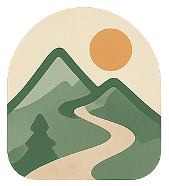
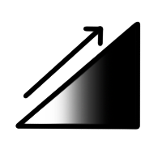
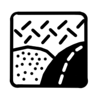

3D
Toggle 2D/3D view

Xplore
Import GPX
Export GPX
Saved Routes
No saved routes yet.

Pente

Surface
Difficulté
POI
Click on the map to begin routing
Photos
Sun Analysis
Snow Analysis
Terrain Analysis
Pathway Overlays
Basemap
Settings
⚙️ Settings
×
Performance
Retina Resolution (HD)
Vertical FOV
45°
Max Zoom Levels
4
Tile Count Ratio
1.0
Debug
Debug Mode
Debug Tiles
Network Visualization
Shadow Tuner
Tile Borders